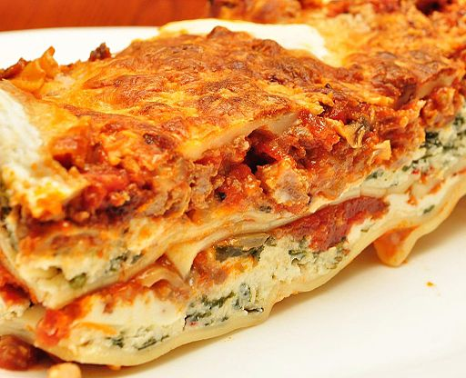

Lasagna Recipe

Description
This easy to make recipe is sure to be a hit! Who
doesn't love lasagna? I mean, it is cheese, big pieces
of pasta, and marinara! This is a recipe that I have
relied on to get through the long cold months in Portland.
Ingredients
- 1 pound sweet Italian sausage
- 3/4 pound lean ground beef
- 1/2 cup minced red onion
- 4 cloves crushed garlic
- 1 (28 ounce) can crushed tomatoes
- 1 (6.5 ounce) cans tomato sauce
- 1/2 cup of water
- 2 tablespoons white sugar
- 4 tablespoons chopped fresh parsley
- 1 1/2 teaspoons dried basil leaves
- 1 1/2 teaspoons salt
- 1 teaspoon Italian seasoning
- 1/2 teaspoon fennel seeds
- 1/4 teaspoon ground black pepper
- 12 lasagna noodles
- 16 ounces ricotta cheese
- 1 egg
- 3/4 pound mozzarella cheese, sliced
- 3/4 cup grated Parmesan cheese
Directions
- Cook sausage, ground beef, onion,
and garlic in a Dutch oven over medium
heat until well browned. Stir in
crushed tomatoes, tomato sauce, tomato
paste, and water. Season with sugar, 2
tablespoons parsley, basil, 1 teaspoon
salt, Italian seasoning, fennel seeds,
and pepper. Simmer, covered, for about
1 1/2 hours, stirring occasionally.
- Bring a large pot of lightly salted
water to a boil. Cook lasagna noodles
in boiling water for 8 to 10 minutes.
Drain noodles, and rinse with cold water.
In a mixing bowl, combine ricotta cheese
with egg, remaining 2 tablespoons parsley,
and 1/2 teaspoon salt.
- Preheat the oven to 375 degrees F or 190
degrees C.
- To assemble, spread 1 1/2 cups of meat
sauce in the bottom of a 9x13-inch baking
dish. Arrange 6 noodles lengthwise
over meat sauce. Spread with 1/2 of the
ricotta cheese mixture. Top with 1/3
of the mozzarella cheese slices. Spoon
1 1/2 cups meat sauce over mozzarella,
and sprinkle with 1/4 cup Parmesan cheese.
Repeat layers, and top with remaining
mozzarella and Parmesan cheese. Cover
with foil: to prevent sticking, either
spray foil with cooking spray or make
sure the foil does not touch the cheese.
- Bake in the preheated oven for 25
minutes. Remove the foil and bake for
an additional 25 minutes. Rest
lasagna Bake in the preheated oven
for 25 minutes. Remove the foil and
bake for an additional 25 minutes.
Rest lasagna for 15 minutes before
serving.for 15 minutes before serving.
- Prepare to answer an onslaught of
questions about where you got this
recipe
- Enjoy!